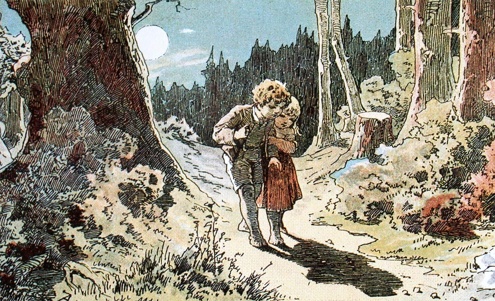

<!-- @include _header -->
<div class="guide-one">
  <div class="container">
    <div class="row">
      <div class="column full">
        <h1>Kidnapped Children Narrowly Escape Fire in Ginger House</h1>
      </div>
    </div>
    <div class="row">
      <div class="column full">
        <p class="intro">Hard by a great forest dwelt a poor wood-cutter with his wife and his two children. The boy was called Hansel and the girl Gretel. He had little to bite and to break, and once when great dearth fell on the land, he could no longer procure even daily bread.</p>
        <section>
          <blockquote class="column one-third left">
            <p>Tomorrow morning we will take the children out into the forest to where it is the thickest.</p>
            <span class="author">&ndash; The Mother</span>
          </blockquote>
          <p class="column two-thirds right">&#39;I&#39;ll tell you what, husband,&#39; answered the woman, &#39;early tomorrow morning we will take the children out into the forest to where it is the thickest; there we will light a fire for them, and give each of them one more piece of bread, and then we will go to our work and leave them alone. They will not find the way home again, and we shall be rid of them.&#39;</p>
          <p class="column two-thirds right">&#39;No, wife,&#39; said the man, &#39;I will not do that; how can I bear to leave my children alone in the forest?&mdash;the wild animals would soon come and tear them to pieces.&#39; &#39;O, you fool!&#39; said she, &#39;then we must all four die of hunger, you may as well plane the planks for our coffins,&#39; and she left him no peace until he consented. &#39;But I feel very sorry for the poor children, all the same,&#39; said the man.</p>
        </section>
        <figure>
          
          <figcaption class="column two-thirds right">This is an image of two children captivated by their shadow.  Little do they know they will soon be kidnapped.</figcaption>
        </figure>
        <p class="column two-thirds right">The two children had also not been able to sleep for hunger, and had heard what their stepmother had said to their father. Gretel wept bitter tears, and said to Hansel: &#039;Now all is over with us.&#039; &#039;Be quiet, Gretel,&#039; said Hansel, &#039;do not distress yourself, I will soon find a way to help us.&#039; And when the old folks had fallen asleep, he got up, put on his little coat, opened the door below, and crept outside. The moon shone brightly, and the white pebbles which lay in front of the house glittered like real silver pennies. Hansel stooped and stuffed the little pocket of his coat with as many as he could get in.</p>
        <section>
          <blockquote class="column one-third left">
            <p>Get up, you sluggards! we are going into the forest to fetch wood.</p>
            <span class="author">&ndash; Random Women</span>
          </blockquote>
          <p class="column two-thirds right">Then he went back and said to Gretel: &#039;Be comforted, dear little sister, and sleep in peace, God will not forsake us,&#039; and he lay down again in his bed. When day dawned, but before the sun had risen, the woman came and awoke the two children, saying: &#039;Get up, you sluggards! we are going into the forest to fetch wood.&#039; She gave each a little piece of bread, and said: &#039;There is something for your dinner, but do not eat it up before then, for you will get nothing else.&#039; Gretel took the bread under her apron, as Hansel had the pebbles in his pocket.</p>
        </section>
        <p class="column two-thirds right">Then they all set out together on the way to the forest. When they had walked a short time, Hansel stood still and peeped back at the house, and did so again and again. His father said: &#039;Hansel, what are you looking at there and staying behind for? Pay attention, and do not forget how to use your legs.&#039; &#039;Ah, father,&#039; said Hansel, &#039;I am looking at my little white cat, which is sitting up on the roof, and wants to say goodbye to me.&#039; The wife said: &#039;Fool, that is not your little cat, that is the morning sun which is shining on the chimneys.&#039; Hansel, however, had not been looking back at the cat, but had been constantly throwing one of the white pebble-stones out of his pocket on the road.</p>
      </div>
    </div>
  </div>
</div>
<!-- @include _footer -->